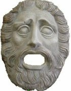
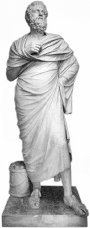

Dionýsos byl bohem vína, z náboženských oslav na jeho počest se vyvinulo řecké drama.
Demeter, Persefoné a Dionýsos byli řečtí bohové. Co o nich víš?
|
ANTICKÉ DIVADLO
Antické divadlo zpracovává náměty z mytologie. Kořeny dramatu musíme hledat v náboženských slavnostech, které měly nejrůznější podobu. Ve starověkém Řecku to byla např. eleusinská mystéria, olympijské hry nebo dionýsie. Eleusinská mystéria byly tajné zasvěcovací obřady, které se konaly v září a trvaly 9 dní. Jejich součástí bylo procesí se sochami bohů Demeter, Persefony a Dionýsa, které doprovázel zástup děvčat a chlapců, pantomimické předvádění sestupu Persefony do podsvětí a zpěv písní. Olympijské hry měly nejen přímé účastníky (sportovce), ale také diváky. Soutěžilo se na stadionech v různých sportovních disciplínách. Také v Římě mělo soupeření před diváky velkou tradici, náboženství ale ustupuje zábavě a dramatikové vycházejí z řeckých her.
|
Thespis (6. stol. př.n.l.)
 První dramatik Thespis oddělil od chóru (sbor recitátorů), který přednášel dithyramby (oslavné hymny na Dionýsa), sólistu, a tak vznikl první dialog mezi sborem a jedním hercem. Thespis prý vymyslel masky a vystupoval na voze v podobě lodi. Thespidova kára se stala symbolem kočovného života komediantů.
První dramatik Thespis oddělil od chóru (sbor recitátorů), který přednášel dithyramby (oslavné hymny na Dionýsa), sólistu, a tak vznikl první dialog mezi sborem a jedním hercem. Thespis prý vymyslel masky a vystupoval na voze v podobě lodi. Thespidova kára se stala symbolem kočovného života komediantů.
|
Řecké divadlo a drama

Rekonstrukce divadelní masky

|
ŘECKO
Velké dionýsie zavedl v roce 534 př.n.l. athénský tyran Peisistratos. Tyto náboženské slavnosti se konaly v Athénách vždy na jaře. Šlo vlastně o soutěžní klání dramatiků, kdy každý autor musel napsat tragickou trilogii. Vítězný dramatik získal věčnou slávu a úctu všech občanů. Kromě tragédií se přednášely dithyramby a pro odlehčení se předváděly komedie a satyrské hry. Každoročně se za 5 dní sehrálo 26 nových her, reprízy se nekonaly. Divadelní hry byly veršované, ale většina dramat se bohužel nedochovala, často známe pouze jejich zlomky.
Organizace Velkých dionýsií byla věcí polis a přístup na tyto náboženské slavnosti měli všichni občané (do amfiteátru se vešlo více než 15 000 diváků). Na jejich přípravě se podílelo minimálně 1000 osob. Nejdůležitější byli autoři dramat, dále chorégové (občané, kteří vydržovali chór a celou hru financovali), členové chóru, herci a různí pomocníci. Nejvíce bylo zpěváků dithyrambů.
Základem divadelních představení byl chór (sbor recitátorů), který komentoval děj hry, a dva (později tři) herci. Ti museli uhrát všechny postavy ve hře. Protože představovali různé muže i ženy, používali pro odlišení jednotlivých postav masky. Velký otvor na místě úst sloužil k zesílení hlasu, i když akustika amfiteátrů (divadel) byla obdivuhodná. Aby diváci dobře viděli, měli herci na nohou vysoké podešve nebo špalíčky (kothurny). Vyspělá byla i jevištní technika (jeřáb pro létání, propadliště, stroje na hromy a blesky atd.).
|
Nejzachovalejší řecký amfiteátr se nachází v Epidauru. Narozdíl od zastřešených divadel (odeion) se amfiteátry často stavěly ve volné krajině.

Půdorys divadla v Efesu
|
Tragédie
Patronkou tragédie byla Múza Melpomené.
Původní význam slova tragédie je kozlí píseň. Kozel byl obětním zvířetem a Satyrové, kteří doprovázeli boha Dionýsa, byli napůl lidé a napůl kozlové. První tragédii napsal Thespis (534 př.n.l.). Nejstarším dochovaným dramatem jsou Aischylovi Peršané (472 př.n.l.).
Osud
Náměty řeckých tragédií zpracovávají známé mytologické příběhy, ale jejich hlavním tématem je osud. Hrdinové zdánlivě jednají podle své vlastní vůle, ale nakonec se ukáže, že osud, který jim určili bohové, se vždycky naplní. Ať už se mu snaží bránit nebo ne. Osud se připomíná prostřednictvím věšteb, snů a zásahů bohů do života jednotlivých postav. Protivení osudu má tragické následky.
Pokus se na základě vybraných řeckých tragédií určit, jaký byl osud hlavních postav.
|
Aischylos: Oresteia (Agamemnon, Oběť mrtvým, Usmíření)
Hlavní postavou trilogie Oresteia je Orestes. První část (Agamemnon) začíná slavným návratem krále Agamemnona domů po porážce Tróje, jeho manželka Klytaimestra ho ale dá vzápětí zavraždit, aby pomstila smrt své dcery Ifigenie. Ve druhé části (Oběť mrtvým) přijíždí do Argu Agamemnonův syn Orestes, aby splnil příkaz boha Apollona a pomstil smrt svého otce. Krátce se setká se svou sestrou Elektrou, potom vstoupí do paláce, zabije matčina milence i samotnou Klytaimestru a prchá pronásledován bohyněmi pomsty Erinyemi (Líticemi). Poslední část (Usmíření) popisuje Orestův příchod do Athén, kde prosí bohyni Athénu, aby rozsoudila jeho spor. Koná se soudní pře, ve které Erinye vystupují jako žalobkyně a Apollon jako obhájce. Orestes je nakonec osvobozen a řetěz krevní msty je přetržen.
Co víš o bozích Athéně a Apollonovi?
|
Aischylos (525-456 př.n.l.)
Aischylos je považován za zakladatele klasického dramatu, protože kromě prvního herce (protagonisty) přidal do svých představení herce druhého. Tak se zrodil jevištní dialog.
Je autorem jediné tragické trilogie (Oresteia), která se dochovala do dnešních časů. Dále se zachovala dramata Prosebnice, Peršané, Sedm proti Thébám a Spoutaný Prometheus.
Herec s maskou
|
Aristoteles: Poetika
Teorií umění (včetně dramatu) se zabýval filozof Aristoteles (384-322 př.n.l.) ve svém pojednání Poetika.
Podle Aristotela tvoří ideální drama pět částí:
expozice (úvodní představení postav a první napětí), kolize (stupňování napětí), krize (vrchol konfliktu), peripetie (obrat v ději, u tragédie zdánlivě šťastný, u komedie naopak), katastrofa (rozuzlení). Toto schéma bezezbytku naplňuje Sofoklova Antigona, ale ne vždy se ho autoři divadelních her drželi.
Dalším pravidlem, které měli dramatikové respektovat, byl zákon trojí jednoty: místa, času a děje (děj se měl odehrávat na jednom místě, během jednoho dne a musel být zachován čistý žánr tragédie nebo komedie). Autor tedy musel všechny osudy postav v minulosti a na jiných místech převyprávět formou retrospektivy, žánr tragikomedie nebyl povolen.
Nejvyšším cílem umění je podle Aristotela dosažení katarze (očištění).
Část Poetiky pojednávající o komedii se bohužel ztratila.
|
Sofokles: Král Oidipus

Město Théby postihne strašlivý mor a jeho král Oidipus se dozvídá od věštců, že příčinou je to, že v něm žije vrah předchozího krále Laia. Oidipus se ho rozhodne nají a potrestat, ale věštec Teiresias označí za vraha samotného Oidipa... Ten se postupně dopátrá, jak se vše seběhlo: Podle věštby měl novorozený syn krále Laia svého otce zabít a vzít si vlastní matku Iokasté za manželku, ale pastýř, který ho měl usmrtit, se nad dítětem slitoval. Oidipa se ujal korintský král a vychoval ho jako vlastního syna. V dospělosti Oidipus raději opustil své domnělé rodiče, aby se vyhnul opakované věštbě. Na cestě zabil neznámého cizince (vlastního otce), rozluštil hádanky Sfingy, která sužovala Théby, a získal za odměnu královský trůn i ruku královny-vdovy (vlastní matky). Když se o tom oba dovědí, Iokasté spáchá sebevraždu a její syn-manžel Oidipus se oslepí a opouští Théby.
|
Sofokles (496-406 př.n.l.)
Sofokles zavedl třetího herce a omezil význam chóru. Z jeho 123 her se dochovalo pouze sedm (Aias, Antigona, Trachiňanky, Král Oidipus, Elektra, Filoktetes a Oidipus na Kolóně).
Sfinga a Oidipus
Cesta argonautů za zlatým rounem
|

|
Euripides: Médea
Po těchto slovech se začíná odvíjet děj hry, ve které zhrzená Médea spáchá nejhorší z možných zločinů. Médea a Iáson se po návratu z Kolchidy skrývají na dvoře korintského krále Kreonta. Kreon nabídne Iásonovi ruku své dcery, když Médeu zapudí. Zhrzená Médea pošle Iásonově nastávající otrávené šaty, které zahubí ji i Kreonta. Navíc zavraždí oba své syny a Iásonovi nedovolí, aby je pohřbil.
|
Euripides (480-406 př.n.l.)
Euripides používal k rozuzlení spletitého děje svých her zásah boha, který se snesl na scénu v důmyslném stroji jako deus ex machina. Stýkal se se Sokratem a dalšími filozofy a zanechal nám 18 her (např. Médea, Ifigenie v Aulidě, Ifigenie v Tauridě, Hippolytos, Bakchantky, Andromaché, Trójanky...).
Co se dozvídáme z úvodních veršů Médey?
|
Komedie
Patronkou komedie byla Múza Thalie. Název komedie (píseň kómu) je odvozen od veselého průvodu (kómu) boha Dionýsa. Šlo o hry s komickou zápletkou i rozuzlením. První komedie byla uvedena v roce 487 př.n.l., poslední dochovanou komedií je Aristofanův Plutos (388 př.n.l.).
Satyrské drama
Satyrské drama bylo parodií na tragédii. Vystupovali zde bohové, ale jejich vlastnosti byly záměrně zesměšňovány. Kromě nich se zde objevují různí podvodníčci a nadpřirozené bytosti. Chór tvořil sbor Satyrů se silénem v čele. Dochovala se pouze jedna satyrská hra – Kyklóps od Euripida a zlomek Sofoklových Slídičů.
|
Aristofanes: Žáby
Ačkoliv to název nenapovídá, Aristofanova komedie Žáby vypráví o sporu dvou dramatiků – Euripida a Aischyla. Bůh Dionýsos hledá do svého divadla velkého dramatika, ale po smrti tří nejvýznamnějších autorů tragédií nemůže žádného najít. Vypraví se proto v přestrojení za Hérakla do podsvětí, kde soupeří Euripides s Aischylem o místo nejlepšího básníka. Přestože Dionýsovým favoritem byl první z nich, v klání vítězí Aischylos, protože jeho verše jsou závažnější. Dionýsos proto vyvede z podsvětí jeho.
Aristofanes: Lysistrata
Tato komedie se hrála během peloponéské války. Hlavní hrdinkou je Athéňanka Lysistrata, která chce ukončit válku mezi Athénami a Spartou. Domluví se s ostatními ženami, že budou svým mužům odpírat manželské povinnosti, dokud neuzavřou mír. Ženám se dokonce podaří obsadit athénskou Akropoli a zmocní se i státního pokladu. Přestože odhodlání žen pomalu opadá, dosáhnou nakonec svého – muži raději přestanou bojovat.
|
Aristofanes (445-388 př.n.l.)
O Aristofanově životě toho moc nevíme, některé ze svých her uváděl pod pseudonymem, zachovalo se jich 11 (např. Jezdci, Vosy, Lysistrata, Mír, Ptáci, Žáby, Ženský sněm, Plutos...).
Menandros (343-291 př.n.l.)
V době helénismu se začínají hry reprízovat, protože nových dramat byl nedostatek. Prosazuje se tzv. nová komedie, které se věnoval např. Menandros. Z jeho her se bohužel dochovaly pouze zlomky (Čí je to dítě? Dědek...).
|
Římské divadlo a drama
Otrok Livius Andronicus přeložil několik řeckých her do latiny a v roce 240 př.n.l. je poprvé uvedl v Římě. Původní hry psal Ovidius, ale bohužel se ztratily. Autorem nejstarších dochovaných tragédií byl stoický filozof Seneca (4 př.n.l. až 65 n.l.), který využíval náměty z řecké mytologie (Phaedra).
Římané také rozvinuli řecké komické výstupy bez masek, ve kterých mohly hrát i ženy – mimos a pantomimos, jejich humor byl ovšem velmi nevybíravý. V Římě žili herci na okraji společnosti, zatímco v Řecku si jich lidé vážili. Hráli zde obvykle otroci a jejich diskriminace ještě vzrostla, když je křesťanský koncil vyobcoval z církve a vykázal jejich výstupy z divadel do cirků.
|
ŘÍM
Vládnoucí vrstvy v Římě se chtěly zalíbit veřejnosti, a proto razily heslo Chléb a hry! Žádný římský občan nesměl hladovět a o zábavu bylo také vždy postaráno. Lidé mohli navštěvovat cirkus (stavba připomínající dnešní stadiony), kde se konaly jezdecké závody trojspřeží a čtyřspřeží. O přestávkách vystupovali akrobati a mimové. Gladiátorské hry byly původně krvavé náboženské oběti a Římané je převzali od Etrusků. Při souboji dvou otroků představoval jeden rybu a druhý rybáře (bojoval nahý, vyzbrojen sítí a trojzubcem), vítěz mohl dostat svobodu, o životě poraženého rozhodovali diváci nebo císař. Později se začaly v římských amfiteátrech inscenovat pompézní bitvy, včetně jezdeckých nebo námořních (aréna byla zaplavena vodou), ve kterých gladiátoři bojovali mezi sebou nebo s divokými zvířaty. Za císaře Claudia zemřelo při jednom z „představení“ 19 000 lidí.
Také římské drama bylo hlavně zábavou, často velmi drsnou, protože hry musely vycházet vstříc vkusu publika zvyklého na představení gladiátorů. Autoři zpracovávali hlavně řecké náměty, scény byly výpravnější a zprvu se nepoužívaly masky, počet herců nebyl omezen. Diváci dávali přednost komediím, ve kterých vynikali především Plautus a Terentius.
|

Římské Koloseum nesloužilo pro divadelní představení, konaly se zde krvavé souboje gladiátorů. Vešlo se sem 50 000 diváků.
|
Herci v Plautově komedii
|
Plautus: Komedie o hrnci
Hlavním hrdinou této komedie je lakomec Euklio, který našel hrnec s pokladem, dál ze sebe ale dělá chudáka. Bohatý soused si chce vzít Eukliovu dceru i bez věna, ale ta miluje jeho synovce Lykonia. Jeho lstivý otrok ukradne Eukliovi poklad, aby milencům pomohl.
Závěr této hry se bohužel nedochoval, ale námět inspiroval Molièra k napsání komedie Lakomec, která už konec má. Jaký?
|
Titus Maccius Plautus
(251-184 př.n.l.)
Plautovy komedie vycházejí z řeckých předloh, dochovalo se jich 21 (např. Komedie o hrnci, Chlubný vojín (Tlučhuba), Lišák Pseudolus, Amfitryon...). Zápletku hry Menaechmi o záměně dvojčat využil W.Shakespeare ve své Komedii plné omylů.

Rekonstrukce Kolosea
|
Internetové stránky
Theatre history, antické divadlo
Múzy, Thalie, Melpomené...
Koloseum, rekonstrukce
Clavmon, překlady antických dramat
Poznámka: Veškerá uváděná data jsou pouze orientační, přepis antických jmen se často liší v délce samohlásek.
|
Doporučená četba
Antické hry, Praha 1997 (přehled českých překladů a významných inscenací)
Aristotelés: Poetika, Praha 1993
Dostálová, R., Hošek, R.: Antická mystéria, Vyšehrad, Praha 1997
Groh, F.: Řecké divadlo, Praha 1933
Kolář, A.: Řecká komedie, Praha 1919
Meandros: Komedie pro všední den, přel. Hubatka, Stehlíková, Svoboda, Praha 1983
Řecká dramata, Mladá fronta, přel. Šrámek, Stiebitz, Praha 1976 (Oresteia, Král Oidipús, Antigoné, Médeia)
Plautus: Amfitryon a jiné komedie, přel. J.Špricl, Svoboda, Praha 1978
Rak, J.: Antická tragédie, Praha 1985
Stehlíková, Eva: Řecké divadlo klasické doby, Ústav pro klasická studia ČSAV, Praha 1991
Stehlíková, E.: Římské divadlo, Praha 1993
|
Sehrajte divadelní představení v antickém stylu (chór, 3 herci).
Zlomek Aischylovy hry
|
|